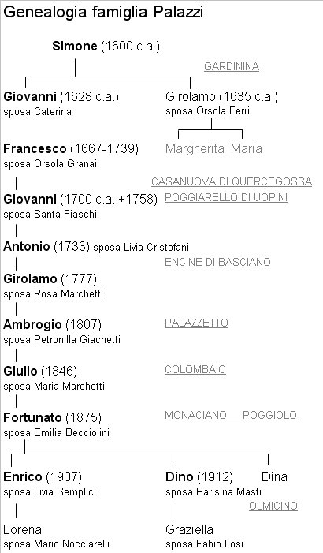
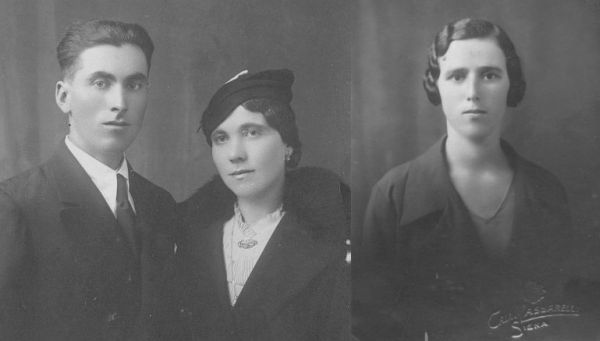

Quercegrossa (Ricordi e memorie)
CAPITOLO II - FAMIGLIE DEL '900
Indice dei Capitoli
Indice Famiglie del '900
PAGNI (1942 - 1954/55); mezzadri; Castello.
Nel 1942 i Pagni prendono possesso del podere al Castello provenienti dal podere Bollogliolo di Radda. L'anziano capofamiglia Emilio di 65 anni conduce con sé una famiglia di otto persone: la moglie Filomena, il figlio Gino (1905) detto “Gambino”, la nuora Cherubina detta "Caruba" e i nipoti Franco (1929), Franca (1932), Graziano (1935) e Giuliano (1940). Abitavano la prima costruzione di destra venendo da Quercia e presero il posto del Granai. Si adattarono bene al paese e vissero in amicizia con tutti specialmente i giovani. La data di partenza è incerta, forse nel 1954/55.
PAGNINI (1946 - ?); Barberino di Passeggeri.
Registrati da don Ottorino all'Alberino (Passeggeri). Non esiste nessun'altra notizia.
PAGNINI MODESTO (1908); mezzadri.
In una sua deposizione nel 1908, Modesto Pagnini dichiara di essere contadino e di abitare nel popolo di Quercegrossa. Nient’altro.
PALAZZI (1686 ca. - 1700) - (1929-1969); mezzadri; (Casanuova) - (Olmicino);
dal Poggiolo.
Con il trasloco del 1929 provenienti dalla Muraglia delle Badesse, la famiglia dei coloni Palazzi entrò a far parte del popolo di Quercegrossa. Si può affermare che non fossero degli sconosciuti perché da almeno tre secoli i Palazzi si muovevano tra le parrocchie di Lornano, Quercegrossa, Basciano, Poggiolo e Uopini, con l'eccezione di una breve permanenza a Monteliscai a fine Ottocento; per questo si possono far rientrare nel ristretto cerchio delle più antiche famiglie della nostra vicaria.
Gardinina
Infatti, e siamo nel 1663, la famiglia Palazzi abita da cinque/sei anni nel popolo di Lornano al podere Gardinina del Nob. Sig. Iacinto Ugurgieri e si compone di dieci persone, così come un decennio dopo, nel 1672, quando il quadro della famiglia presenta Giovanni di Simone, capoccio, che vive col fratello Girolamo ed entrambi con consorti e figli: Giovanni di 34 anni, Caterina sua moglie di 30, Virginia di 10, Antonio di 8, Francesco di 5, Bartolomeo di 3 anni, Girolamo fratello di Giovanni di 31 con la moglie Orsola e i due figli Giuseppe e Jacomo. Francesco di Giovanni è battezzato a Lornano il 14 febbraio 1667, figlio di Caterina Mirolli. L'anno successivo, nel 1673, il capofamiglia Giovanni muore e questo fatto potrebbe essere stata la causa della partenza della famiglia della quale si perdono momentaneamente le tracce; infatti nell'elenco delle famiglie di Lornano del 1682 a Gardinina abita la famiglia Righi.

Casanuova di Quercegrossa
Non passano venti anni che i Palazzi, il ramo del fu Giovanni, fanno la loro comparsa nella parrocchia di Quercegrossa dove alla Casanuova De Vecchi sono entrati dopo il 1686 con Caterina la vedova di Giovanni, i tre maschi Antonio, Francesco e Bartolomeo e una nuora, Orsola Granai, moglie di Francesco.
Poggiarello di Uopini
Una quindicina di anni rimangono alla Casanuova, poi intorno al 1700 partono nuovamente per raggiungere i parenti nella parrocchia di Uopini al podere detto il Poggiarello. Ora, e per alcuni decenni, abbiamo la registrazione dei battesimi della famiglia Palazzi nella Pieve di S. Giovanni in Siena, dove le famiglie delle Masse portavano i loro nati, e le registrazioni parrocchiali dei defunti. Con le nascite al Poggiarello dei figli di Bartolomeo, di Francesco e del cugino Giuseppe, la famiglia Palazzi continua a proliferare e il ramo diretto dei Palazzi di Quercegrossa prende vigore con Francesco e Orsola che mettono al mondo Giovanni (1700), Giuseppe (1702) e Filippo (1705). Giovanni al suo tempo sposerà Santa Fiaschi e di questo matrimonio abbiamo le nascite di Giovanni Maria nel 1731, sposato poi a Orsola Papi; di Girolamo del 1735, sposato a Maddalena Gabbrielli; di Antonio, il diretto antenato, nato il 16 marzo 1733, e per ultimo di Lorenzo nato intorno al 1748. Antonio all'età di 32 anni prenderà in moglie Livia Cristofani nel 1765 quando già la famiglia si era trasferita a Encine intorno al 1760. Nel lungo permanere al Poggiarello, circa sessanta anni, scompare la generazione di Gardina e il 7 febbraio 1734 morivano Antonio a 69 anni poi il 22 luglio 1739 Francesco in età di 73 anni e il 2 dicembre 1742 la sua vedova Orsola a 74 anni. L'anno successivo anche Francesca Viligiardi vedova di Bartolomeo moriva il 1 novembre 1743 a 67 anni. Poco prima di lasciare il Poggiarello finivano i loro giorni i fratelli Filippo il 27 maggio 1757 di anni 52 e Giovanni il 19 novembre 1758 di anni 63, entrambi figli del fu Francesco. Intanto nel 1757 troviamo che a Tabbiano di Basciano abita Pietro del già Bartolomeo Palazzi che evidentemente ha abbandonato la famiglia.
Encine
Ma è verso il 1760 che l'intera famiglia Palazzi lascia il Poggiarello e si trasferisce a Encine di Basciano dove il capoccio Giuseppe di 62 anni del già Francesco Palazzi comanda una numerosa famiglia comprendente figli e nipoti. Per completare il quadro nel 1767 appare a Uopini, nella Comunità del Castagno, un altro ramo dei Palazzi guidato da Lorenzo con il fratello Santi. L'interesse per il ramo diretto del nucleo che dimorerà a Quercegrossa nel Novecento ci fa soffermare al podere Encine di Basciano, proprietà delle RR.MM. di Santa Marta, dove nel detto 1765 la famiglia Palazzi è forte di ben venti componenti. Si suppone che in conseguenza di questa abbondanza di mano d'opera familiare le monache abbiano concesso loro non uno ma due poderi: Encine e Piazza; evento insolito quanto raro. Con il già citato Giuseppe capoccio di 62 anni e vedovo di Virginia Galardi, la forza lavoro è composta da dodici adulti compresa Santa Fiaschi la vedova di Giovanni. Venti anni più tardi, nel 1786, la famiglia raggiunge sempre le sedici unità, con in più due garzoni. Tuttavia la famiglia si è parzialmente indebolita con gli adulti scesi a nove dei quali cinque sono donne. Comunque in quell'anno comprende il capoccio Antonio con moglie e figli, la vedova del fratello Girolamo, Maddalena Gabbrielli con i suoi cinque figli dei quali l'ultimo di 6 anni, e l’altro fratello Lorenzo senz'altro scapolo. Antonio e Livia hanno avuto sette figli, due maschi e cinque femmine. Quest'ultime non tarderanno a sistemarsi come Angiola e Caterina mentre Vittoria, Assunta e Violante sono ancora adolescenti. I due maschi sono Francesco del 1770 e Girolamo nato l'11 marzo del 1777, l'antenato diretto. Negli anni a venire però si registra il distacco dei cugini, figli del fu Girolamo, e particolarmente grave la partenza di Giovanni con la moglie Nunziata Rabissi e i suoi cinque figli maschi che, unita ai matrimoni delle ragazze, contribuiranno a render più debole la famiglia e questo porterà inevitabilmente ad abbandonare Encine e la Piazza. Intanto nel 1803, il 26 settembre, muore a Encine l'anziano Antonio dato di 73 anni.
Palazzetto
Ma, come era prevedibile, nel 1808 la famiglia, ridotta a nove persone e un garzone, si è trasferita al podere Palazzetto sempre delle suddette monache e ha in Francesco di 38 anni (vedovo di Annunziata) e nel fratello Girolamo di 32 con la moglie Rosa Marchetti di 28, i punti di forza, avendo Lorenzo il capoccio celibe già 61 anni, mentre i cinque cugini, tre figli di Francesco e due di Girolamo, hanno un'età che va dai 3 mesi agli 11 anni. Nel prosieguo del tempo e fino al 1825 si continuano a registrare le numerose nascite dei figli di Girolamo, undici in totale, e ad Ambrogio nato nel 1807 e M. Anna del 1 marzo 1810 si aggiungono Costantino (Costante) battezzato a Basciano il 7 aprile 1810; Giuseppe (1812), morto il 24 febbraio 1877, sposo di Caterina e una sua figlia Annunziata sposerà Pellegrino Panti del Palazzetto; Maria nata il 30 giugno 1812 e morta il 16 gennaio 1814; Teresa del 14 giugno 1814; Caterina nata il 28 agosto 1816 e morta il 1 marzo 1818 di un anno; Lorenzo (1821); Luisa (1823); Savino (1824) morto celibe il 10 gennaio 1855 a 31 anni e l'ultimo, Davidde (1825), morto il 1 dicembre 1868 di anni 40. In totale undici figli che nel 1837, otto di loro con una nuora, vivono con il padre sempre al Palazzetto dove però non c'è più lo zio Francesco che si è separato fin dal 7 febbraio 1827 per trasferirsi a Bulciano e poi all'Olmicino di Quercegrossa verso il 1830 per tornare poi alla Ripa Sansedoni nel 1832 dove in quegli anni vive anche un pigionale certo Agostino Palazzi. Dal ramo di Francesco avremo altre famiglie e una di queste sarà del figlio Giovanni, che risulta nel 1881 a capo di una numerosa famiglia al podere Ondra di Uopini. Anche l'altro figlio Luigi sarà presente ad Uopini nello stesso anno a capo di otto persone alla Villa Grottanelli.
Colombaio
Intanto Ambrogio, sposato verso il 1832 con Giachetti Petronilla (1813), mette al mondo Antonio nato il 18 ottobre 1833; primo di sei figli. Ma sta per concludersi la permanenza di Girolamo nel popolo di Basciano e dovrebbe essere il 1838 l'anno della sua migrazione verso il Colombaio, sulla strada provinciale della Castellina, nella parrocchia di Uopini. I figli di Girolamo, che muore nel 1854, rimangono uniti e nel 1874, 35 anni dopo il trasferimento, sotto la guida del più anziano Ambrogio di 67 anni convivono al Colombaio ancora i suoi fratelli Giuseppe (62 anni), Costantino (57) e Lorenzo (50) che formano un nucleo di undici persone comprendente tre dei sei figli di Ambrogio: Francesco celibe di 25 anni, Antonio di 40, coniugato con Giulia Manganelli il 28 gennaio 1858 a Uopini, ma senza figli, e Giulio di 28 anni sposato a Maria Marchetti con il piccolo Adamo che ha già un anno e mezzo. Ma tra poco nascerà Fortunato e sarà lui a continuare la genia dei Palazzi di Quercegrossa. In quegli anni del Colombaio tanti avvenimenti interessarono i figli di Ambrogio e vediamo che Francesco (1849) sposò Bruttini Serafina (1854) fu Giuseppe il 3 febbraio 1876 a Uopini e morì il 26 marzo 1925 nella parrocchia del Poggiolo al podere Casaccia. Nel 1915, Francesco capoccio di una numerosa famiglia era tornato a Gardinina e con lui si trovava anche l'anziana vedova Giulia, la moglie del fratello Antonio. Dei figli di Francesco presenti a Gardinina nel 1916 si conosce Celso (1877) sposato a Ersilia Nardini, con una figlia Gina del 1908. Poi Emilio, sposato a Elvira Bagnolesi con le figlie Gemma, Gilda e Giovanna, e infine Eugenio. Delle tre figlie di Ambrogio se si esclude Giulia (1841) andata in sposa il 13 maggio 1865 a Fabio Ancilli di Uopini vediamo le altre due vittime di una fine precoce e violenta: Caterina (1839) morì nubile a 19 anni il 19 gennaio 1858, mentre Assunta (1843), anche lei di 19 anni, "alle ore 4 e 3/4 pomeridiane fu trovata morta in un fontone d'acqua" il 2 marzo 1862.
Giulio
Di Giulio che abbiamo visto sposato a Maria Marchetti sappiamo che ebbe cinque figli con Adamo (1872/73), Fortunato (1875), Eva (1878), Giuseppe (1881) e David (1884). La permanenza dei Palazzi al Colombaio iniziata nel 1838 terminerà alla fine dell'Ottocento con lo smembramento della famiglia e la partenza dei fratelli di Giulio verso Gardinina e successivamente al Poggiolo nel podere Casaccia nel 1925. Ma per pochi anni, poi anche la famiglia di Celso ed Eugenio si frazionerà di nuovo con migrazioni verso Monastero e Pontignano.
Monteliscai
Giulio, dal canto suo, lasciato il Colombaio si dirigerà verso Monteliscai e nel 1899 lui e la moglie con i cinque figli abitano nel Poder nuovo di Monaciano. Qui un paio di anni più tardi si sposa Adamo con Angiolina Bruni e nasce Agostino nel 1902.
A sinistra una sconosciuta Palazzi, ma senz'altro si tratta della stessa Emilia, moglie di Fortunato, nella foto di destra, con la piccola Graziella.
Un lustro ancora e anche Fortunato si sistemerà con Emilia Becciolini del fu Michele nata il 1 aprile 1887. Da questa sede di Monaciano, nel 1920, Fortunato con moglie e due figli, ai quali si aggiungerà l'ultima nata nel nuovo podere, prenderà dimora alla Muraglia del Poggiolo.
Poggiolo - Fortunato
L'antico ceppo dei Palazzi si è frantumato in cento pezzi e il ramo di Fortunato germoglia timidamente, ma quanto basta per continuare la stirpe. Dal suo matrimonio sono generati Enrico il 18 settembre 1907, Dino il 2 giugno 1912, battezzati entrambi in S. Giovannino a Siena, e Dina il 23 aprile 1921, ed ora sono già grandicelli.
Quercegrossa
Ma siamo ormai alla vigilia del trasferimento a Quercegrossa. Ancora pochi anni e, dapprima coloni nel piccolo podere di Giotto dal 4 marzo del 1929, poi l'anno dopo, il 10 febbraio 1930, sostituiranno i Bartali all'Olmicino per una lunga presenza che si protrarrà per quaranta anni.

Enrico Palazzi e la moglie Livia.
A destra, Parisina Masti, moglie di Dino.
Nel nuovo podere, dove troveranno i Papi e poi i Nocciarelli, vivranno la loro esistenza nella normalità delle famiglie contadine del tempo ma la linea maschile della famiglia finirà perché sia da Dino che Enrico nasceranno solo femmine. Il primo a prender moglie all'Olmicino fu Enrico che nel 1935 sposò a Basciano Livia Semplici di 22 anni essendo nata a Pievasciata il 12 agosto del 1913, e nel 1937 nasceva Lorena. Tre anni dopo anche Dino prese moglie e la trovò a Quercegrossa. Nella nostra chiesa celebrò il suo matrimonio il 17 settembre del 1938 con la 24enne Parisina Masti del fu Alberto e Rosa Buti nata al Mulino il 2 aprile 1914. Alla fine del gennaio 1939 da questi sposi nasceva Marcellina che però ebbe brevissima vita e morì dopo 15 giorni il 10 febbraio. Poi nel 1942 il 15 ottobre gli nacque Graziella e fu l'ultimo battesimo in casa Palazzi. Infine, a 24 anni, si sposò anche Dina con Sestilio Nucci del Casalino il 20 ottobre 1945.
La famiglia Palazzi al matrimonio di Lorena.
All’Olmicino, da sinistra: Mario Nocciarelli, Lorena, Livia, Enrico, Graziella, Dino e Parisina.
Era sopravvenuta nel frattempo la morte di Fortunato il 18 maggio 1940 all’età di 65 anni. Dal '45, dopo il matrimonio di Dina, in casa Palazzi non si registrò nessun fatto anagrafico per molto tempo e si dovette aspettare il 1960 per celebrare prima un matrimonio e poi un funerale. Infatti, il 28 settembre di quell'anno le due famiglie dell'Olmicino, Palazzi e Nocciarelli, festeggiarono il matrimonio dei loro giovani Lorena, figlia di Enrico, e Mario di Fedele. Lui aveva 27 anni, lei 23. Non passarono quindici giorni che l'anziana Emilia di 73 anni raggiunse Fortunato. Anche per Graziella di Dino venne l'età del matrimonio e a 22 anni sposò Fabio Provvedi, già di Quercegrossa, ma ora residente a Monteriggioni dove lei lo seguì. Ma ormai, per tanti motivi, era già maturato il tempo del distacco dell'Olmicino e avvenne nel 1969. Erano passati quaranta anni esatti dal loro arrivo a Quercegrossa e si diressero a Certosa dove per alcuni anni lavorarono ancora a mezzadria nel podere del sig. Rotellini. Poi Dino se ne andò nel 1977 a 65 anni ed Enrico continuò a fare quello che aveva sempre fatto, cioè a lavorare la terra, fino all'ultimo, quando morì nel 1990, abitando con la figlia Lorena a Siena dove era tornato due anni prima. Aveva 83 anni e fu l'ultimo Palazzi del ramo di Fortunato. Oggi soltanto Dina Palazzi, vedova di Sestilio Nucci, abita a Quercegrossa.
Una coppia di sconosciuti sposi di casa Palazzi.
Inizio pagina
Indice famiglie del '900
Indice dei Capitoli
|